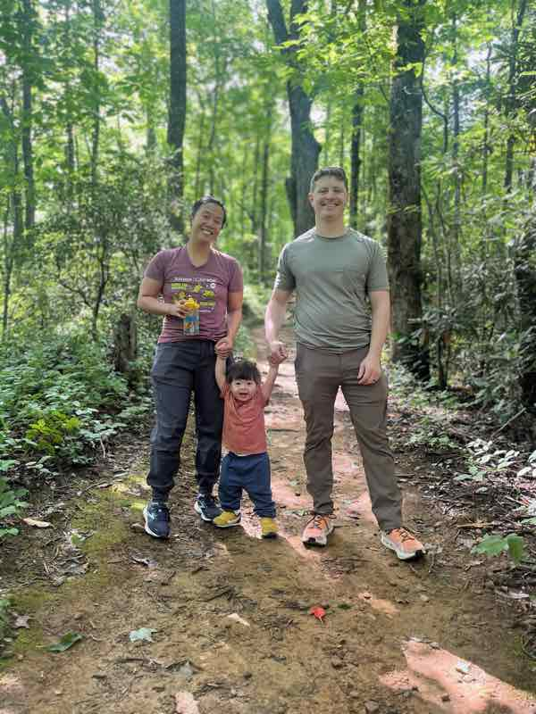

About Ryan Schmidt
Leadership
At i4cp, I'm the sole designer; I own the design system, UX standards, and the PRDs and roadmap conversations that shape what gets built.
Being the only designer forces a different kind of ownership: there's no one else to hand ambiguity to.
At D-Tools, I led twice-weekly design reviews with five designers and six PMs.
I sharpened collaboration, learned how to spot edge cases early, and saw how teams actually make decisions.
The reviews that made the biggest impact were the ones where disagreements surfaced early enough to change direction.
-
End-to-end ownership
Design → PRDs → staging code
-
Product direction influence
UX, roadmap, and system strategy
-
Built design review system
Drove alignment and faster decisions across complex product work
-
Promoted to Senior Product Designer
Recognized for leadership in systems thinking and cross-team impact
-
Leading UX at i4cp
Owning system direction, standards, and roadmap influence
-
AI-augmented build
Cursor + OpenCode: design decisions validated in code, not mockups
-
Custom AI assistant
Gemini + Supabase + vector search powering every portfolio answer
Builder
I’m making the shift from designing the interface to building it.
Using Cursor and OpenCode, I can take a product from concept to staging without waiting on an engineering handoff.
My portfolio is the proof, and the full story is one page over.
AI didn’t replace the thinking.
Every layout and interaction is still a deliberate decision about structure and hierarchy.
The tools just help me move those decisions closer to production, faster.
Building in code changed how I design.
Faster validation, earlier visibility into implementation constraints, and work that's closer to shippable from the first pass.
Mentorship
From 2021 to 2026, I mentored UX design students through Designlab by leading structured group critiques as a Senior Facilitator.
I wrapped up after five years to focus on family (toddlers, right?) and my day job.
After 400+ critique sessions, I was more intentional in how I gave feedback.
I helped students understand how to define the problem rather than focusing on a design or a feature.
Working with so many different designers meant constantly seeing new tools, patterns, and ways of thinking, which pushed me to stay current.
-
400+Group critique sessions
Helping designers define the problem first
-
1500Designers mentored
Building clearer thinking, not just better screens
-
Started mentoring at Designlab
Supporting students and early-career designers
-
Promoted to Senior Facilitator
Leading structured group critiques
-
Concluded mentorship (400+ sessions, 1,500 designers)
Stepped away after five years to focus on family and core product work

Life Lately
I live in Austin with my wife, our toddler, and two cats named Pickles and Pesto. Most of life right now revolves around my son: parks, swimming, bedtime stories, snacks in places snacks absolutely should not be, and getting outside whenever we can.
I organize the team mostly so everyone else can just show up and play. I like the skating and the team dynamic, but let's be honest, mostly the beer after.
A hobby you can never fully master, which is either the appeal or the trap. Unfortunately my favorite guitarists all play the kind of stuff that makes you question your life choices.
Another hobby you can't master in a lifetime, though lately it's more practical than ambitious. We still make room for new recipes, usually stolen from somewhere we've traveled, and I've fallen into wine as its own rabbit hole.
I don't miss scraping ice off my windshield or fishtailing down a hill, but I do miss white Christmases and the bite of real fall air.